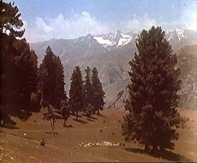
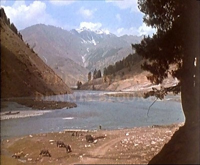
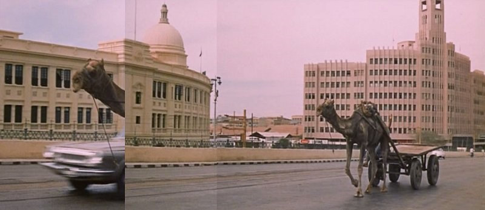

PAKISTAN
Khyber Pakhtunkhwa
Saif-ul-Maluk Lake, Naran, Mansehra



THE BARON: And Suddenly You're Dead (Cyril Frankel: January 1966)
John Mannering and Cordelia Winfield are in Switzerland on business.
(Identified by Sietse Postma, May 2022)
Sindh
Karachi Port Trust Building, M.A Jinnah Road, Karachi, Karachi City

THE CHAMPIONS: Desert Journey (Paul Dickson: Spring 1968)
(Identified by Sietse Postma, May 2022)
Return to Index